|
Friday, April 30, 2004
why does it always rain on my day off.
(derren brown is amazing)
Thursday, April 29, 2004
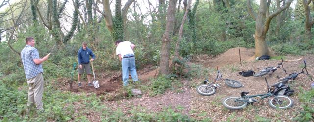
wow. lately a lot of stuff has been going down. so much news to
tell. bleachy has started riding again. he's back out on he pashely
24mhz. still not digging lazy old man.
went to tenterden and help dig new trails. they look like they
will be amazing soon if they don't get plowed. two lines and hips
and so much fun. plus ghetto ramps at unigate is good. below is tom
riding them
paddock wood trails sound fun. must visit as soon as they are
dry. there are so many places to go it's exciting. this summer is
looking good.
also we started a big line at orange. steep and tight is the aim.
oh and smoooth.
also headcorn will be campaigning for a skatepark soon. special
fayre thing on monday so lots of signatures hitting paper. and if it
all goes wrong sittingbourne is only 30 mins away. i love the
summer.
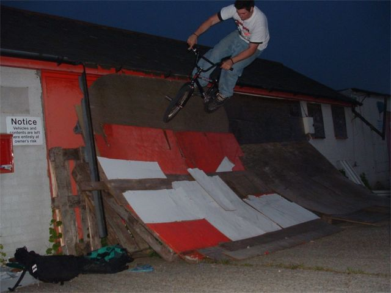
Wednesday, April 28, 2004
 
friday night tim fell off
badly on a griz/tuck. ripped his ear off nearly. he can't ride due
to a busted shoulder now.
yesterday we went to tenterden, met
tom and nigel and helped them dig new trails and then went and rode
ghetto ramps. pictures later.
Tuesday, April 27, 2004
wow i never knew autum skies fade was so old. they
have been making that site for longer than i have been riding i
think. it's close anyway.
http://www.xanga.com/home.aspx?user=autumnskiesfade&nextdate=7%2f26%2f2002+20%3a54%3a52.000&direction=n
Monday, April 26, 2004
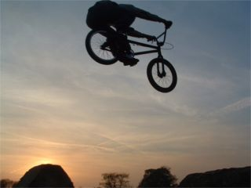 
Saturday, April 24, 2004
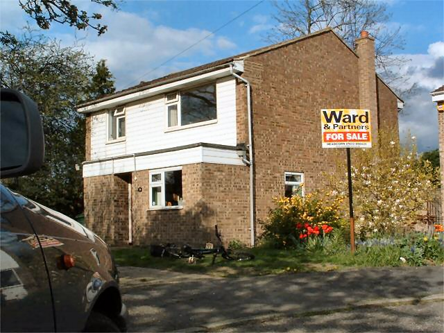
my car and my house. the house is for sale. this means
it has to be tidy all the time so when people come to look they want
to buy it. this may sound stupid but it's true. have you never seen
those programs where people are looking round a house and they say
stupid things like "i like this colour" or "look at that loverly
something". people are too stupid to realise that this stuff doesn't
come with the house. even if you tell them. or if there's something
they don't like they come up with crazy excuses like i don't like
the decor, or it feels unlooked after it probably needs a lot of
work. that translates into i am too stupid to realise that paying
hundreds of thousands of pounds for a house is not about the colour
of the walls which costs about 20 pounds to change. so it might be
hard for you to come next weekend bambi. wait till we
have our flat in about a week or so ok?
Friday, April 23, 2004
i
work with someone called steve. his girlfriend took these
pictures.
Thursday, April 22, 2004
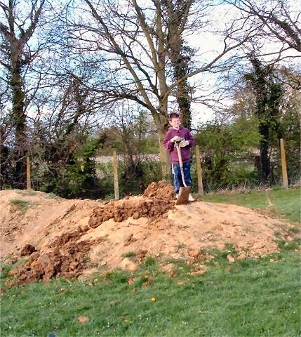 this is aiden. it looks like he's been digging hoggs
green. he's only about 10 and he's small so he can't get the speed
on any of the jumps. i showed them how do dig small jumps so they
can ride them but they want to build big jumps. they are under the
impression that if you have a big lip it makes you go higher so you
don't need to go as fast.
places to visit this summer:
- kiddy
- wisley
- nonsuch
- paddock wood
-
tenterden
- joeys
- dfs
- reading
- bournemouth
-
dartford
- polegate
- cothill
maybe some other places
but i can't think of them.
Thursday, April 22, 2004
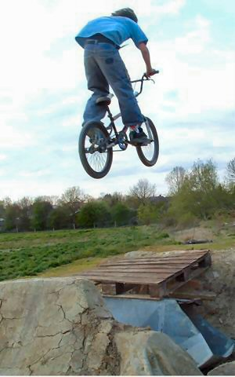 busy
day. got to the trails late and from 5 people there. weird. people
at the trails. they had seen them from the train and came to
ride.
i
made a page which is here. clicky
so i showed them hoggs
green too but they were tired.
then after eating i went back
to hoggs green and taught the kids there how to build jumps. i broke
their spade too so i feel pretty guilty. i might buy them a new one
tomorrow.
trailscene in headcorn sucks big time but it might
get better with time. or worse who knows. there was a mini moto at
the tabletops today wrecking all the lips. they roll up the landing
and then wait till they are at the lip, then accelerate so the dirt
is ripped off the lip.
tomorrow i am going back to real
jumps somewhere.
oh yeah the riders i met were from paddock
wood and they have trails so we have to go there sometime soon when
they are dry.
i don't know what this guy's name was. i think
he was the only person to clear this jump properly but it is quite
hard, especially when you are tired.
i stole all of
graeme hardies bike show media and made this page for prettyshady
but it got unpubished cos it sucks. haha simon and joe will
probably be made at me for stealing their media now. sorry please
forgive me.
Monday, April 19, 2004
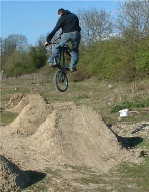 unknowntrailsrider has
a link off pretty shady. big time. it's got a little update from
tim. it's pretty much his site these days. as tim said on utr this
lip has been redone. it's the second which you never really see
pictures of. i have just been out there redoing the downside too. so
stoney. it's too dry to do the third lip. too dry? yep.
i'm
not sure about this layout. i like all the bits about it but it
feels like theres something missing. i want to change it again
already.
i watched that program about stephen hawking. it was
pretty interesting. he said a lot of stuff about what people can
achieve if they try. he was the first person to prove that the
universe has a starting point. big time.
it makes riding a
kids bike seem pretty insignificant. and updating bus timetables
(that's my job). does it ever feel like you're wasting your
life?
i want a hobby which fulfils these
criteria:
1. is enjoyable
2. is worthwhile
3. pays
well
or 1 and 3 would do just fine.
Sunday, April 18, 2004
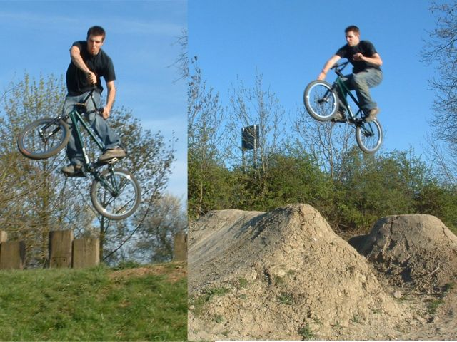
turndown at hoggs green and front wheel grab over
orange. photos by becky. we had to do a lot of attempts to get the
timing right so now i can do front wheel grab every time. or a front
wheel hit and then your fingers get sore from the tyre.
Sunday, April 18, 2004
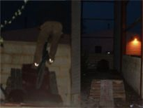 new ghetto ramp spot in headcorn. complete with rotton
milk and strange kiddys toys as well as pallets, a wardrobe lots of
nails, screws and aspestos.
the plan is to let the skaters
make it happen but they tend to be too lazy.
Sunday, April 18, 2004
seriously you would not believe the problems i have been having
with this. crimsonblog has been playing with me for nearly 2 weeks.
for some reason it's working again now, and it's raining outside so
i guess it's time for an update soon. i have been riding a lot this
week. about 4 hours a night. lots of new stuff is going down.
more later.
Thursday, April 15, 2004
Thursday, April 15, 2004
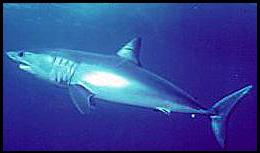
The mako is a pelagic, or open ocean, shark. It's dark blue
on the back and white on the underside of its body. These deep water
sharks grow to 8 feet, rarely reaching a length of 12.5 feet.
They are related to the Great White Shark.
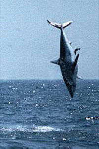
Its average size is 6-8 feet. The mako is highly
specialized for continuous swimming, and is considered one of the
fastest sharks in the water. It can achieve speeds of more than 22
mph. It has long, knifelike teeth and feeds mainly on mackerel,
squid and a variety of fishes including the fast-moving tunas,
swordfishes and other sharks. Marine mammals do not appear to be an
important food for mako sharks. It is really quite good at
jumping.
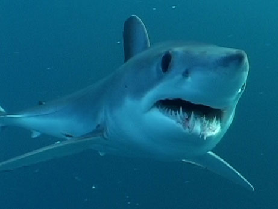
The mako shark is found around the world in warm and temperate
seas, in the Pacific from Oregon to Chile, and juvenile makos are
common in southern California during the summer months. Some
scientists believe that female mako sharks migrate into San Diego's
waters to have their pups. From spring to autumn, pups and 1-2
year-old sharks can be found off San Diego, several miles out at
sea.
update?
old
news
|
|